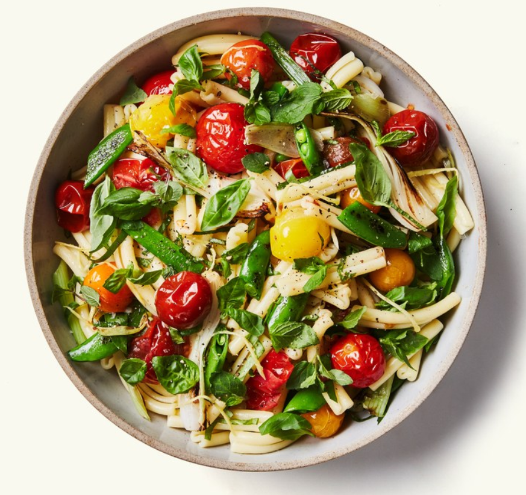

Pasta Salad with Spring Vegetables
🕒
🙂
📄
30 mins
6 servings
Nutrition
INGREDIENTS
9 garlic cloves, crushed
3 sprigs thyme
3 2-inch strips orange zest
1 3-inch piece ginger, peeled, cut into very thin matchsticks
4 cups cherry tomatoes
6 tablespoons fresh orange juice
¼ cup olive oil
1 tablespoon light brown sugar
Freshly ground black pepper
8 ounces spring onions (about 3 large)
2 tablespoons olive oil, divided
8 ounces sugar snap peas, trimmed, halved (about 3 cups)
Kosher salt
12 ounces casarecce, fusilli, or penne
2 tablespoons (or more) fresh lemon juice
2 cups thinly sliced basil, divided
2 cups thinly sliced mint, divided
RECIPE PREPARATION
Preheat oven to 325°. Toss garlic, thyme, orange zest, ginger, tomatoes, orange juice, oil, brown sugar, salt, and a pinch of pepper in a 13x9” baking dish. Roast, gently tossing mixture every 20 minutes, until tomatoes are tender and just bursting but still intact, 50–60 minutes. Pluck out and discard thyme and orange zest.
Separate spring onion stems from bulbs. Cut stems in half lengthwise, then cut crosswise into 2” pieces. Slice bulbs through root end into quarters. Heat a dry medium skillet, preferably cast iron, over high. Add 1 Tbsp. oil, then sugar snap peas, and shake pan so sugar snaps spread out in a single layer. Cook, tossing once, until charred on both sides, about 4 minutes. Transfer to a large bowl.
Heat remaining 1 Tbsp. oil in same skillet. Add spring onion stems and bulbs, arranging in a single layer. Cook, tossing once, until charred, about 4 minutes. Transfer to bowl with sugar snap peas; season with salt.
Cook pasta in a large pot of boiling salted water, stirring occasionally, until al dente. Drain, transfer to a large bowl, and let cool, tossing around now and again to make sure it’s not sticking.
Add tomato mixture, sugar snap peas and spring onions, lemon juice, 1½ cups basil, and 1½ cups mint to pasta and toss gently to combine (you don’t want to break up the tomatoes too much); season with salt, pepper, and more lemon juice if desired.
Serve pasta salad topped with remaining ½ cup basil and ½ cup mint and a drizzle of oil.